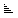
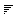

| PATH |
A WOSortOrder component enables the user to sort the objects displayed by a WODisplayGroup. It displays an icon representing the current sorting order ( unsorted,  ascending, or  descending.) When the user clicks the icon, the component modifies the display group's sort orderings and redisplays the display group's objects.
key.
The user's browser displays a tooltip above the sort order icon:
"Push to toggle sorting order according to displayKey."
Defaults to key.